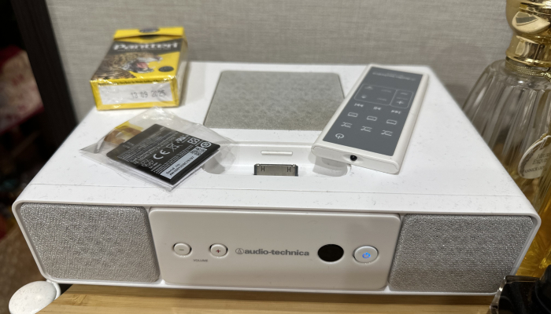
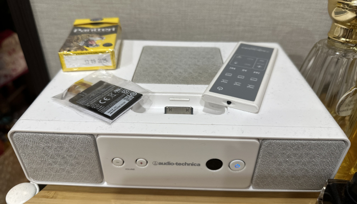

mindsoap.net 2025-08-21
한참 뜯었다가 덮었다가 내장들 바꾸었다가 껍질들 바꾸었다가 하고 갖고놀던 아이팟들
안쓸건 팔고 그래도 꽤 많이 서랍에 넣어놨었는데, 최근 다시 오디오북듣는 바람이 불어서
아이팟에 넣으면 꽤 좋겠다는 생각을했는데 실제로 매우 괜찮았다.
구형 모델 3,4,등에는 m4b가 플레이 안되서 쓸모는 없는데
- 원래 수집용이지 그다지 쓸모가 있지는 않지;
저장용량이나 배터리를 뻥튀기해서 만들어놓은 5,나 7등에 넣으니 아주 쓸만함.
어차피 파일 하드에 넣어서 보관할거 아이팟에 넣어서 보관하고
메루까리등에서 줏은 아이팟스피커에 물려서 쓰니까 꽤 괜찮음 ㅋㅋ
간만에 하나를 예전에 사놓았던 투명케이스로 교체한다고 배를 따봤는데
아 내가 만들어놓고선 SSD가 들어있는거에 감탄했다캄..
SD카드도 괜찮긴한데, SSD가 들어있으면 파일 복사하는 속도가 빠르긴한듯

 
